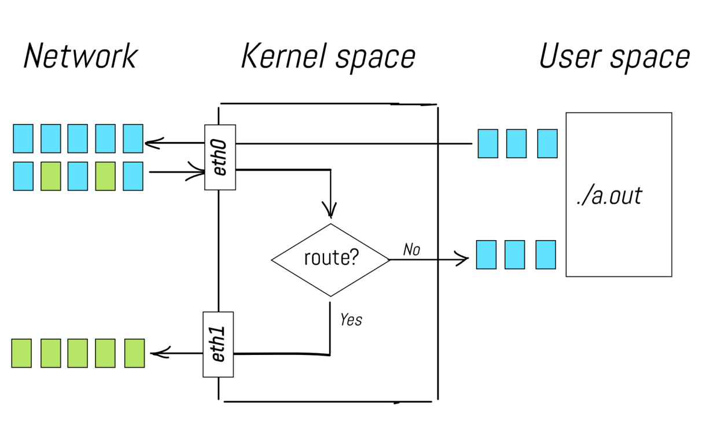
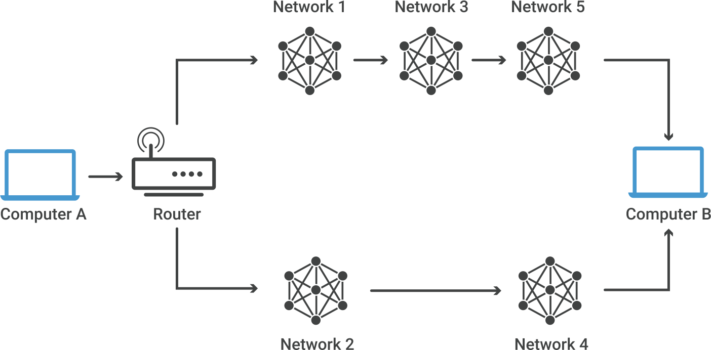

Advanced network configuration
with iptables
Giovanni Ciatto
References
Network packets stepping through the Linux OS
-
Ingoing packets, coming from the Internet, are received by some local network interface (e.g.,
eth0)- these may be directed towards some local process willing to receive them
- … or towards another machine in the local network, via another local network interface (e.g.,
eth1)
-
Outgoing packets are sent by some local network interface (e.g.,
eth1) towards the Internet- due to either some local process sending them…
- … or some forwarding
What’s forwarding?
- While sending and receiving packets is more common for end-hosts (e.g. clients or servers)…
- … forwarding is more common infrastructural hosts (e.g. routers, load balancers, etc.)
The need for customization (pt. 1)

One may want to alter the default behaviour of the Linux OS in handling packets, e.g. to perform:
- firewalling, e.g. blocking packets from/to some IP addresses, or ports for security reasons
- translating network addresses, e.g. translating packets’ source/destination IP addresses or ports, e.g. for the sake of access control
- a.k.a. NATting, masquerading
- load balancing, e.g. distributing packets among multiple servers
- traffic shaping, e.g. prioritizing packets based on their content, or limiting their bandwidth
The need for customization (pt. 2)
This implies attaching some custom logic to specific points in the packet processing flow, e.g.:
- firewalling: may be achieved by dropping packets in the
INPUTphase - NATting: may be achieved by modifying packets in the
POSTROUTINGphase - load balancing: may be achieved by modifying packets in the
FORWARDphase - traffic shaping: may be achieved by marking packets in the
PREROUTINGorINPUTphase